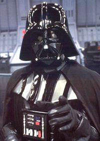

Alguien
 De: La Frikipedia, la enciclopedia extremadamente seria.
De: La Frikipedia, la enciclopedia extremadamente seria.

|
¡LISTA!
Este artículo o sección no es más que una torpe lista. Si crees que vale la pena, edítalo para que tenga párrafos y esas cosas.
|
De la serie grandes personajes:
Aqui deberia haber una imagen de alguien, pero fijate tu que ahora no la hay, alguien la habra quitado
| Nacimiento
|
Alguien nació hace tiempo.
|
| Muerte
|
Alguien morirá algún día.
|
| Ocupación
|
Alguien trabaja mientras que alguien se toca los cojones.
|
| Nacionalidad
|
Preguntaselo a alguien.
|
| Malo o bueno
|
Es tan bueno como nadie
|
| Atentados contra la humanidad
|
Alguien mató a los dinosaurios.
|
| Religión
|
Alguien lo sabrá.
|
| Notas
|
Alguien dominará el mundo.
|
Un ejemplo de SuperAlguien

Yamcha mirando lascivamente a alguien
Alguien es alguien que existe, lo cual puedes ser tu o este, o Mortadelo.
Alguien es un ser insípido a nuestros 9 sentidos, pero es alguien, al fin y al cabo, como yo, el tío de la micro, o el narco del barrio.
Existe una especie inmune al alguien, y estos son los incorpóreos, nadie obviamente, esto origino un conflicto armado (que casi no vale la pena mencionar en un articulo aparte)entre alguienes y nadies, también conocidos como nobodies, llamado el conflicto del elefantito en el que "nadie" murió y alguien sobrevivió.
Cuando algo, el gran alguien de este lado del misisipi negro, comenzo el proyecto "le sangfan terrible" (los elefantitos pateatraseros)la recien formada organizacion XIII vio con malos ojos que tratara de crear al soldado perfecto, haciéndolo alguien, ya que ellos son incorporeos, osea, nadie y por ende el soldado perfecto es rafaela carra para ellos, por lo que intervino a lo estilo bush, atacando la capital de misouri, tychamingo. La sangre de miles de incorpóreos y alguienes había dido derramada (esto explica la cara de Xigbar) por lo que optaron "cortar por lo sano" y firmar el tratado S.T.A.R. 3, un tratado homicida-suicida en el que ninguna de las dos facciones se atacaria entre si, "corporea" e "incorporeamente", sin embargo nunca se les paso por la mente impedir que los "alguien" señalaran a los nadie, (o naiden, traducido en shile) por esa razon, cada vez que señalamos y arrancamos, o le picamos en shile, un ángel recibe su halo... kitty edicion deluxe, si, la del casco, pero señalar a la persona erronea puede causar serios disturbios o inclusive la caída de la bolsa, a continuacion, por que arrancamos al ver a alguien:
- Porque te espera una paliza entre amigos.
- Porque te hayas confundido al señalar y hayas señalado al portero de una disco-te-ca(gas de la hostia que te va a dar).
- Por haberle metido el dedo, en el ojo.
- Porque era unicejo.
- Porque está detrás de ti.
- Porque está dormido y le has despertado con una mala hostia...
- Porque... ¡¡@#"·$&%!!
- Porque era un tigre de 4 metros de alto con los ojos rojos.
- Porque era un gitaner.
- Porque sí, y yasta, pa que dar más explicaciones.
- Porque te has quedado de los últimos en la carrera de muertos.
- Porque Bin Laden esta a punto de jugar al Combat Flight Simulator V.
- Porque lo dice mi vieja, y mi vieja, ¡es lo más grande!
- Porque si no, viene el coco y te come.
- Porque se te ha olvidao comprar el pan.
- Por que lo ahí arriba lo dice.
- Porque arriba escribimos Porque separado.
- Porque nemesis es genial.
- Porque es una competencia.
- Porque se lo hiciste a un robot zombie alienígena del espacio adolescente vegetariano que dominará al mundo.
- Porque, según Crónica TV, te tengo que joder
- Porque si no lo haces dejaras de ser friki oi yeah
- Porque yo lo digo
La ONU recientemente ha comprobado que señalar con el dedo causa mas muertes que la fiebre disco, que el señalar sin el dedo, las encuestas rebelan que de aqui a 97 años el desempleo y la inflación serán causadas en un 59% por los dedos, lo que finalmente provocara la desevolucion de la especie humana, perderemos los dedos, el tracero, y seremos falos gigantes(yupi), no se ilusionen, las mujeres igual tendran esa forma. Pero tu, si, tu potencial alguien, puedes impedirlo, señala usando la nariz la boca o los testiculos, amárrate los dedos si vas a la feria de fenómenos, y cuídate, usa trampas chinas en los dedos al tener sexo, y lávate las manos antes y después de cada paja con virutilla.
Hechos de Alguien
- Alguien te mira en la ducha.
- Alguien ha cambiado esto de sitio.
- Alguien le disparó a alguien por la espalda, ¡¡que capullo es alguien!!
- Alguien se paso por Alien, pero alguien no le dió el papel, ¡¡Alguien sigue siendo un capullo!!
- Alguien ha visto quien tiró el jarrón.
- Alguien se meó encima, que joio pringao es.
- Alguien mató a alguien. ¿Se considerá eso un suicidio?.
- Alguien me hackeó el facebook.
- Alguien está de cumpleaños el mismo día que nació.
- Alguien se miró al espejo, dice que se parece a alguien.
- Alguien mató a nadie.
- Alguien se cayó encima de alguien.
- Alguien no pudo evitar leer esto.
- Alguien el que lo lea.
- Alguien averiguó porque nadie usa el periódico para limpiarse la mierda.
Alguien tachara esto.- Alguien piensa que lo de arriba no es divertido.
- Alguien leerá la frase de abajo.
- Alguien leerá la frase de arriba.
- Alguien es emo y pokero a la vez, entonces ¿es un Poke-emon?
- Alguien escribira artículos en la Frikipedia.
- ALGUIEN ESCRIBIRÁ EN MAYUSCULAS.
- Alguien dirá esta frase 3 veces.
- Alguien dirá esta frase 3 veces.
- Alguien dirá esta frase 3 veces.
- Alguien, alguien, alguien. ¡Siempre alguien!
- Alguien se cayó por la ventanilla de la moto
- Alguien se a masturbado en mi cama
- Alguien me follará esta noche
- Alguien te está mirando
luego, Otra señal de que un pie se te ha clavado unas 1...2...3...4... bueno muchas veces en tu parte de atras viaja hasta el cerebro y este ordena que te caigas para terminar de ser destrozado.
 Alguien es tu padre. Búscalo bien cabron!!!.
Personalidades de Alguien
- Alguien está triste cuando alguien está contento (y viceversa).
- Alguien es anormal, por eso quiso hacer puenting sin cuerda.
- Alguien puede ser sentimental.
- Alguien nació listo, pero alguien le pegó, y alguien se quedó subnormal.
- Alguien vio Titanic. A partir de ese día, alguien se ha vuelto hostil (violento pa los alguienes catetos).
- Alguien nació sin corazón, Yamcha se lo quitó.
- Alguien tiene varias personalidades, entre ellas la de alguien, la de alguien, la de alguien, la de alguien y la de alguien.
- Alguien sufrió viendo Dos Tontos muy Tontos.
- Alguien está trastornado, me lo dijo alguien.
- -No soy alguien doctor, no soy alguien...
- Alguien no tiene sentimientos, alguien se llama el Luisma.
- Alguien no tiene piedad, siempre dice que se la queda en casa.
- Alguien no tiene dignidad, pronto averiguaremos quién es alguien.
- Alguien tiene la personalidad de un mono.
- Alguien es omnipresente.
- Alguien le quitó la personalidad a alguien.
- Alguien tiene el equilibrio emocional más bajo que una depresión en el núcleo de la tierra.
- Alguien grita cuando alguien muere.
- Alguien es más sensible que el taparrabos de Gólum.
- Alguien es tan sensible, que una mosca se posó en su rodilla y le dio un infarto.
- Alguien es varón y dijo que el padre de nadie esta re-bueno (me suena a GAY).
- Alguien escribió este artículo.
- Alguien conoce a Alguien.
- Alguien me cae mal.
- Alguien te odia.
- Alguien esta leyendo esto.
- Alguien ya mencionó eso de arriba...
- A Alguien le gusta cagar encima de tí
- Alguien es feo, ¿no serás tú?
La vida secreta de Alguien, por Alguien
- Alguien tiene diario, en él pone fotos pr0n...
- Un día, vi a Alguien en mi casa, en concreto, en el servicio, en concreto en la bañera, en concreto, muerto. Alguien lo había dejado allí. ¡¡Alguien es aún más capullo!!
- Alguien se dejo la cartera en la cárcel, los polis no se la devolvieron.
- Alguien esta en una secta, practica el budismo, y fuma coca en papel de aluminio.
- Alguien se espía a sí mismo.
- Alguien espió a Aria Giovanni (listo el tipo), una milésima de segundo después, recibió una in/esperada patada en los cojones
- Alguien tira la basura por la ventana.
- Alguien le dijo a alguien, que alguien le estaba espiando. Alguien se enfadó y le mató.
- ¡¡He visto a alguien...!!
- Alguien se cansó de tanto matar a alguienes inocentes, ahora mata a alguienes culpables.
- Alguien me está espiando, ¡¡será cabrón!!
- Aguien uso chuletas en el examen práctico de Educación Física.
- Alguien se chivó de que alguien rompió el cristal. Alguien fue castigado.
- Alguien es sonámbulo, ten cuidado o te chocaras con alguien.
- Alguien tiene pelos en la pupila.
- Alguien se comió un lobo que se estaba comiendo una oveja, que se estaba comiendo una araña, que se estaba comiendo una mosca, que estaba comiendo mierda de burro.
- Alguien te
ama quiere follar por detrás, alguien es hombre, alguien estuvo en el manicomio.
- A alguien lo violó un payaso ebrio
- A alguien excito (que gay).
- Alguien le reza a caterpie.
- Alguien esta tocando a tu novia/o en este momento, ese alguien soy yo.
Autor(es):
- Krusher
- Nexo
- Fordus
- Doctor grijander
- MURO DE AGUAS
- Odin
- Homer Tunder
- Frikiman
- Aque
- Alex2610
Frikipedia 2005-2016, Licencia
GFDL 1.2 - Extraído por FrikiLeaks